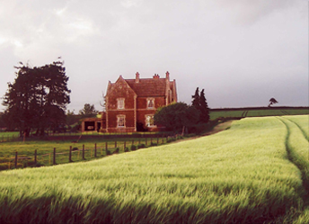

Welcome to Withiel Farm
01278 652357
{kind=link}
Withiel Farm is a friendly, family run working farm set in beautiful Quantock surroundings. The farm is situated in the historic village of Cannington which offers, 4 local pubs, a variety of different types of dining and a small local shop.
Cannington is situated between the low wet plain of the River Parrett to the north and the Quantocks to the south. The River Parrett Trail passes close by as it approaches Bridgwater Bay on its final stages.
The Farmhouse is conveniently located 5 miles west of Bridwater and junction 24 of the M5 motorway and is just 3 miles south of Hinckley Point Power station.
Our recently refurbished farmhouse offers spacious rooms fitted with a TV, settee, tea and coffee facilities, wash basin and shared bathroom/toilet facilities. We have 1 room with an en suite. There is ample parking and beautiful, quiet surroundings.
We offer long and short term lets with prices starting from £25 per night. Give us a call on 01278 652357 or email us at withielfarm@hotmail.com for further information and availability.
{kind=link}
{kind=link}
{kind=link}
How to Find Us
We are very easy to get from junction 24 of the M5 motorway, located just a short drive from the towns of Bridgwater and Taunton and have great access to the surrounding countryside. Our address is Withiel Farm, Cannington, Somerset, TA5 2LZ. Call us on 01278 652357 and we can give you more details on how to find us.